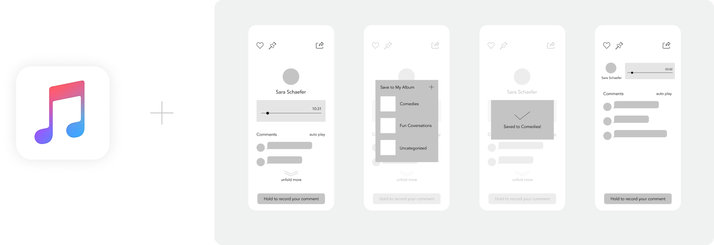

Oddio: A new audio-based social network with a seamless, endless feed
My Role Experience Designer(Research / Prototype / Video Production)
Time 10 weeks | 2020
Team Kyle Barron, Dennis Check, Rituparna Roy, Natalie Schade, Michael Silvestre
The Question
Extrapolating from current media trends, what features and interactions could comprise an audio-focused social platform?
The Solution
Oddio is a new social media platform for bite-sized audio posts. It provides novel interactions by leveraging hands-free experience and focusing on listening behaviors. In the mean time, we designed speculatively in response to the rise of wireless earbuds and smart home devices.
Audio-based social media is an underexplored field.
▪️ Rise in audio consumption among the Millennials and Gen Z
▪️ Online radio listening crowd in the US increases 3% each year
▪️ Audio is more sensory compared to reading text
▪️ Screen fatigue is a rising challenge
User Research
We conducted a series of primary research to understand people’s preferences in audio comsumptions .
97.3%
of our survey participants say
they multitask when listening to audio
Through interviewing, storyboarding, pretotype testing, and parallel prototype testing, we found:
✔️ People want to interact with friend via audio
✔️ Audio-to-visual transcriptions can be helpful in many scenarios
⚠️ Scared of creating errors without visuals
⚠️ Most people say that they prefer hands-free
interactions, while we notice that there is a learning curve for voice commands
Interested in reading our full Literature Review and Research report? Click here.
First-round prototyping
We used “Wizard of Oz” method to conduct remote user testing (due to COVID-19). By using pre-recorded soundtracks, we were able to give participants audio feedback per screen interaction. We also offered our participants a list of voice command to find out the delicate balance between GUI and CUI.
Final Interface Design
Listen to audio feeds with minimal visual supplements
Post an audio clip to stay connected to the community
Adjust your feed base on your own interests
Concept video
Watch our concept video to see how you can interact with your friends on oddio- whether if you are washing dishes, taking a break from screens, or working out at home! Accessible by phones and smart home devices.